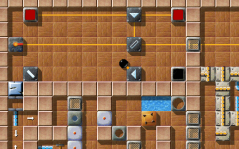
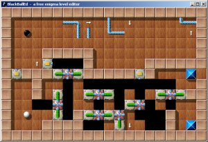

Уровень МесяцаМы хотим каждый месяц больше внимания уделять превосходным уровням. Превосходные уровни это те, у которых средняя оценка пользователей наивысшая и в целом много оценок. Следовательно это Ваш выбор. Поэтому пожалуйста оценивайте уровни, на которых Вы играете и не забывайте присылать Ваши оценки вместе с результатами в конце каждого месяца. Вы можете найти все предыдущие уровни месяца в нашем архиве. Апрель 2007: «Pneumatic Delivery» от Manuel KönigВ этот раз мы рассмотрим турникеты и штопоры, лазеры и почтовые камни, головоломки и настоящие головоломки с большим рейтингом в 8.80 по мнению 5 проголосовавших -- да, самое время для «Pneumatic Delivery»!

Enigma V # 59
Когда я впервые запустил «Pneumatic Delivery», я просто был сбит с толку. Это было мое первое знакомство со штопорами; в 90-х я с лихвой наигрался в Oxyd 1, но не встречал там штопоры. Я отложил его в сторону и продолжил решать другие уровни, пока в один прекрасный день не понял, для чего предназначены штопоры. Несколько недель спустя я снова наткнулся на уровень Manuel'я и в этот раз было весело, действительно весело! Pneumatic Delivery один из моих любимых уровней, много элементов на небольшом пространстве, от которых у Вас голова идет кругом. Мне нравятся уровни, в которых мне сразу все видно, но тем не менее длительное время нельзя этим воспользоваться, а здесь это блестяще реализовано. Сделанный ясным и аккуратным, без скрытых сюрпризов или лишних участков, требующих ловкости, мне просто не к чему придраться. Наибольшее удовольствие мне доставила головоломка с сегун-камнями, лишь недавно я смог ее решить. Пытаясь решить этот уровень в прошлом году, на этом месте я потерпел неудачу. Да, эта головоломка тоже сделала меня более осторожным; не вопреки ее простоте, а наоборот благодаря ей! Если у кого-то проблемы с последней частью, стоит взглянуть на «The Enigmhanoi Towers». «Этим он убеждает Вас играть в него снова и снова»Хотя я и не оценил ни одного уровня пока не решил Pneumatic Delivery, он мне понравился. Что я больше всего ценю в этом уровне так это то, что он предлагает мне путешествие в легко представимое место. Я считаю, что кроме того, что в этом уровне все предельно открыто, в нем есть и небольшие загадки. И благодаря этому во время игры Вы можете быть уверены, что не будете обмануты и не попадете в ловушку, что убеждает Вас играть в него снова и снова. Если Вы когда-либо составляли уровень Enigma, Вы конечно знаете, что это подобно поэзии или работе архитектора. Уровень предлагает простор для реализации своих идей, вроде того, чтобы дотронуться всех оксидов. Но когда в Вашей голове возникнет идея или какое-то наполнение, которое Вы хотите разместить в уровне, Вы сразу понимаете, что хотите создать. Вы вольны делать все, что захотите. Однако, чем больше Вы полагаетесь на шаблоны, тем более ясным и понятным будет Ваше творение. Вспомните, каждый рассказ состоит из идущих друг за другом букв, но если у этой последовательности есть начало и она что-то значит, Вы все поймете. Поэтому Вы абсолютно ничего не почувствуете и не начнете думать об уровне пока не нащупаете основную идею. По этой причине сюжет или хорошо определенная тема может сделать уровень более волнующим, чем остальные. Я не могу сказать, что Pneumatic Delivery мой любимый уровень, но отмечу, что он хорошо спланирован, в нем есть пять очаровательных головоломок, хотя он и не больше двух экранов. Первые четыре головоломки только подготовка к последней, которая фактически не обратима, а значит Вы не можете повторить попытку - вот что делает его таким волнующим. Кстати, меня восхитило, что Manuel посвятил этот уровень своему отцу. András тоже заметил сходство с серией «Gods of Enigma», «Doors Forever» («но в нем есть места где требуется ловкость») и «Automaton», который нравится ему не меньше. Хочется упомянуть клон Oxyd Magnum 82 «Puller Mailing», с признаками слегка похожей головоломки, но по иронии судьбы, решающийся без какой-либо пересылки штопоров … «У меня не было опыта создания уровней»Внимательные игроки заметят, что уровни Manuel'я уникальны. Трудно поверить, что этот шедевр - его дебютная работа! На самом деле, «Pneumatic Delivery» был моим самым первым уровнем. У меня не было опыта создания уровней. Тем не менее я хотел спроектировать уровень для моего отца, ярого фаната Oxyd и Enigma. Поэтому первый «черновик» я создал в BlackBallEd, а затем доработал его с помощью Lua. После долгих поисков я нашел скриншот этого первого «черновика» и прилагаю его [смотрите ниже] (скриншот сделан 28-го сентября 2004 года). Как любой может заметить, уровень тогда умещался в одной комнате, но самое главное - а именно часть с турникетами - уже было. Однако предполагалось, что как трубопровод, так и штопоры игрок найдет в следующих головоломках, а так как в комнате не хватало места, я создал вторую.

Черновая версия 2004 года
Это объясняет, почему шарики появляются в середине уровня! В большинстве уровней шарики появляются с левого края, вверху или вблизи других границ … в этом случае уровень «был создан вокруг шариков». Это дает характерное ощущение, что ты уже в процессе игры. Сравните например с «Teamplay Doors» или «Doors Forever». Упрощенный режим?Во второй версии уровня [размещенной на mag-heut.net] у уровня есть «упрощенный режим». Я добавил его позже, потому что считаю, что много уровней Enigma слишком сложны для начинающих и мой уровень к сожалению не исключение. Однако, не так легко было упростить уровень, без полного его изменения. Я попытался убрать некоторые камни и на их месте разместить некоторые предметы. Надеюсь, что неопытные игроки также смогут насладиться «Pneumatic Delivery». Существует упрощенный режим?! Ладно, я тоже не знал об этом, пока Manuel не намекнул мне. На самом деле в Enigma версии 1.00 есть упрощенный режим, но мы забыли его включить … к сожалению, мы не можем понять были ли получены перечисленные выше рекорды в обычном или в упрощенном режиме. Поэтому мне очень жаль, что приходиться объявить об обновлении «Pneumatic Delivery» в Enigma версии 1.01 с исправлением упрощенного режима, что сделает все предыдущие рекорды PD устаревшими. Пожалуйста сообщите нам, если Вы увидите еще какие-то уровни, содержащие упрощенный режим, но не помеченные как имеющие такой режим. Лично я думаю, что создал весьма неплохой уровень, но что более важно: он нравится моему отцу. Ему потребовались недели (или даже месяцы?), чтобы решить его. Когда я сегодня переигрывал этот уровень, оранжевая головоломка всякий раз меня просто бесила - я надеюсь остальные игроки чувствовали то же самое. ;-) Спасибо тебе, Manuel, за эту восхитительную пятикратную головоломку и истории, которые мы теперь можем с ней связать! С уважением, |